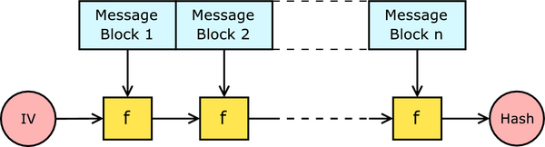

Lecture 10
Contents
Merkle-damgard Construction

Used by MD5, SHA-0, SHA-1, SHA-2
Padding algorithm was flawed
Data is broken into blocks.
IV (Initialisation vector) -> Like a seed
- Vulnerable to a length extension attack (See this previous post on length extension attacks)
Signing documents
In previous lectures, we had learnt that we could securely send data to someone by encrypting a message with their public key, and they decrypting that message with the private key that only they possess.
But there also exists another challenge, if someone wishes to broadcast a message to everyone - how would the receiver know that the message they receive has not been tampered with?
Naive signing
One naive way, would be to encrypt the document with your private key (yes that’s right, encrypt with your private key.).
Because of lovely nature of how public/private key pairs work - You can encrypt your message with either public or private key, and the the other to decrypt.
By being the only person who possesses the private key, a successful decryption with the public key must mean that the data is the same as was when the sender created it.
But if the message was modified (perhaps arbitrarily) before reaching the sender, upon decryption of the message, we would not be able to verify the data integrity.
Also,
encrypting a public-key-encrypted message with the private key is the same as decrypting the message.
If one were to get a public-key-encrypted message signed, they would be able to see the contents of the message, which only the owner was supposed to see.
Better signing
A better way to validate the integrity of data is to sign the hash rather than the document.

Key Stretching
With the work / effort ratio in mind, to make something more secure - we want to increase the resource usage (time and storage/memory space) for an unauthorised access.
For example, using a ‘slow’ algorithm that perhaps takes 2 seconds to decrypt.
It would have minimal impact on genuine users, but would be detrimental to attackers.
2 second delay - eh.
100000x 2 second delay - ahhhh nope.. way too long.
Password Attacks
The two categories of password attacks are online and offline attacks.
Online password attacks utilise the server as the platform for attack.
By going through the system’s authentication system, we are constrained to the limitations of their system (Time to solve Captchas, authentication limits, waiting for the server to process and fulfil your request). These attacks are often much slower than offline attacks - but sometimes are the only way into a system (at first)
Offline password attacks involve getting a dump of the password database stored in the server, and using your own S U P E R C O M P U T E R to crack the hashes with tools like HashCat, or John the Ripper.
Speaking of offline attacks, let’s have a look at the Unix authentication system!
/etc/shadow
The /etc/shadow file (on your *nix and Mac OS X systems) contains login information pertaining to the users of the system.
It has the format (USERNAME):$(HASHTYPE)$(SALT)$(HASH):(youdontneedtoknowtherest)
In terms of passwords, it contains the hash, the salt used, and the type of hash.
With access to this file (aka you’ll need root access) and enough time, you would be able to crack the hashes to find the passwords for each user
Salts
Salts are arbitrary strings of text that are either appended or prepended to a message before it is all hashed. This means that given two different salts, the hash of the same message and a different salt would produce two hashes that are not the same!!
md5(AAApassword) = D5581DAEF8238853D0EDFBDA8361562F
md5(BBBpassword) = 2DA397558A2C230E0B38FB75B0BC519A
Salts (ie AAA, and BBB) do not need to be stored privately and could just be left as plain-text inside a database (although that’s always a nice idea)
Rainbow Tables
Rainbow tables are precomputed hashes of many many many different password combinations. They essentially save us the effort of having to compute the hashes ourselves - for the tradeoff of really massive rainbow table files (in multitudes of tens to thousands of gigabytes)
They however become somewhat useless if a password was hashed with a salt.
A new rainbow table would need to be generated with that salt in mind - quickly making cracking of salted hashes very unfeasible.
Alternatives to managing credentials
An alternative to trying to implement your own authentication system, is not to.
You’ve proably seen websites allowing you to login using your Facebook, Google, Twitter or perhaps even GitHub account - these sites will manage the authentication and security stuff for you, simply giving you an OAuth Token (or similar) back.
Nice!